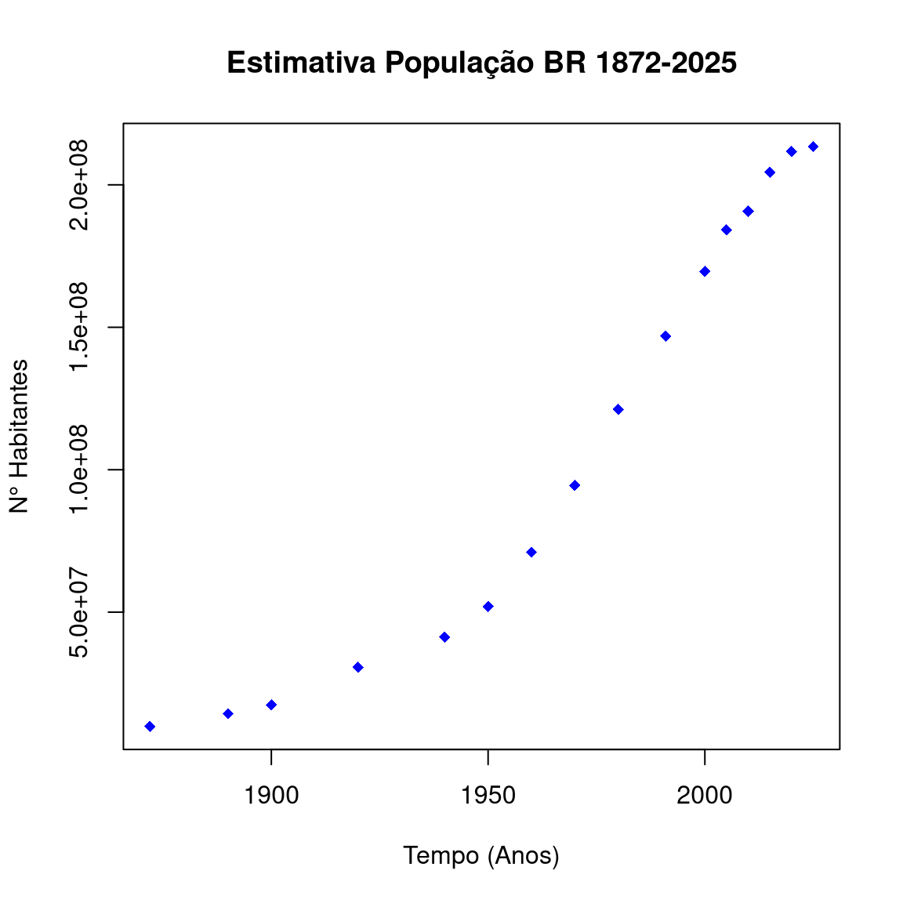
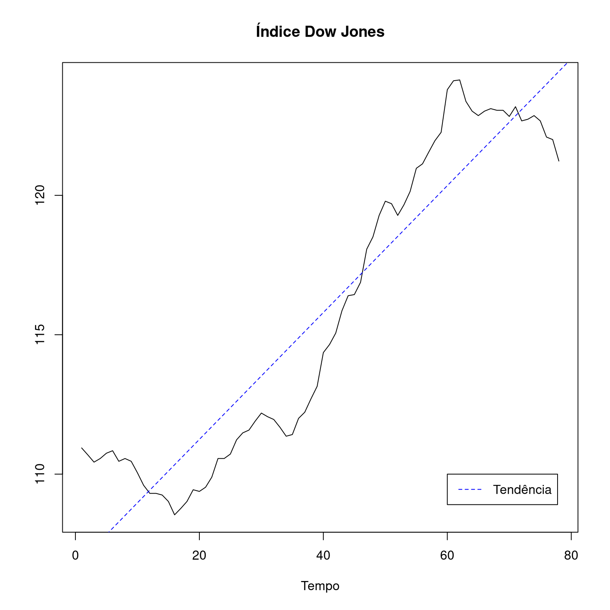

STA13828 - Análise de Séries Temporais I
Processos estacionários
Última atualização: 25 setembro, 2025
Processos estacionários
Definição 1 (Processo estocástico) Seja \(\cal{T}\) um conjunto arbitrário de índices. Um processo estocástico é uma coleção \(\{X_t; t\in\cal{T}\}\), tal que, \(X_t\) é uma variável aleatória para cada \(t\in\cal{T}\), definidas no mesmo espaço de probabilidade \((\Omega, \cal{F}, \mathbb{P})\).
- As variáveis aleatórias do processo estocástico são na verdade funções de dois argumentos \(X_t(\omega)\), onde \(t\in\cal{T}\) e \(\omega\in\Omega\);
- O conjunto \(\cal{T}\) é normalmente considerado como o conjunto de números naturais \(\mathbb{N}\), inteiros \(\mathbb{Z}\) ou mesmo o conjunto dos números reais \(\mathbb{R}\);
- Se \({\cal T}\) for finito ou enumerável, e.g., \({\cal T}:=\mathbb{Z}\), o processo é considerado de parâmetro discreto. Se \({\cal T}\) for infinito ou não-enumerável, e.g., \({\cal T}:=\mathbb{R}\), teremos um processo de parâmetro contínuo.
Para detalhes, sugere-se Brockwell e Davis (2016) e Morettin e Toloi (2006).
Interpretação I
Para cada \(t\in\cal{T}\) fixo, \(X_t(\omega)\) é uma variável aleatória com uma distribuição de probabilidade. Por exemplo, se consideramos \(X_{t_1}(\omega), X_{t_2}(\omega)\) e \(X_{t_3}(\omega)\) variáveis aleatórias de um processo estocástico, podemos assumir de cada uma dessas variáveis possuem funções de probabilidade diferentes. Claro, assumindo que elas existam!
Interpretação II
Para cada \(\omega\in\Omega\) fixo, teremos uma função de \(t\), i.e., uma realização (ou trajetória) do processo estocástico. Por exemplo, suponha que cada realização do processo é denotada por \(X^{(1)}_t, X^{(2)}_t, X^{(3)}_t, \ldots, X^{(n)}_t\). Cada realização do processo é uma função determinística de \(t\). O conjunto dos valores de \(\{X_t; t\in{\cal T}\}\) é chamado de espaço dos estados do processo estocástico e os valores de \(X_t\) podem ser chamados de estados.
Alguns exemplos de processos estocásticos
Sinusóide com fase e amplitude aleatória: Sejam \(A\) e \(\Theta\) duas variáveis aleatórias, tal que, \(\mathbb{P}\left[A\ge0\right]=1\) e \(\Theta\) segue uma distribuição uniforme em \(\left[0,2\pi\right)\).
Um processo estocástico \(\{X_t; t\in\mathbb{R}\}\) pode ser definido em termos de \(A\) e \(\Theta\) da seguinte forma: \[X_t=r^{-1}A\cos\left(\nu t + \Theta\right), \quad \text{(com prob. 1)}\] onde \(\nu\ge0\) e \(r>0\).
As realizações do processo \(\{X_t\}\) são funções de \(t\), quando \(\omega\in\Omega\) é um valor fixo, i.e., \(X_t(\omega)=r^{-1}A(\omega)\cos\left(\nu t + \Theta(\omega)\right)\) ou escrito de outra forma \[x_t=r^{-1}a\cos\left(\nu t + \theta\right).\]
Passeio aleatório: Seja \(\{S_t; t=0, 1, 2, \ldots\}\) uma sequência de variáveis aleatórias, tal que \[S_t=X_1+X_2+\cdots+X_t = \sum_{i=1}^tX_i, \quad t=1,2,\ldots, \quad \text{(com prob. 1)}\] onde \(\{X_t\}\) é uma sequência de variáveis aleatórias independentes e identicamente distribuidas (iid). Um passeio aleatório com média zero é obtido quando \(S_0=0\).
Podemos considerar outros cenários, por exemplo, quando \(\{X_t; t= 1, 2, \ldots\}\) é um processo binário, i.e., uma sequência de variáveis aleatórias independentes, tal que \[\mathbb{P}\left[X_t=1\right]=\mathbb{P}\left[X_t=-1\right]=\frac12.\] Nesse casso, o passeio aleatório é chamado de simétrico simple.
Definição 2 (Série temporal) Uma série temporal é a realização de um processo estocástico.


Definição 2 (Série temporal) Uma série temporal é a realização de um processo estocástico.
Alguns exemplos

Processos estacionários
Definição 3 (Funções de distribuição de um processo estocástico) Seja \(\{X_t; t\in{\cal T}\subset \mathbb{R}\}:=\{X_t\}\) um processo estocástico e seja \({\cal I}\) um conjunto de índices, tal que
\[{\cal I}=\left\{\mathbf{t}=\left(t_1,t_2,\ldots,t_n\right)'\in{\cal T}^n: t_1<t_2<\cdots<t_n, n=1,2,3,\ldots\right\}.\]
Então, o conjunto de funções de distribuição (finito dimensionais) de \(\{X_t\}\) são as funções \(\{F_{\mathbf{t}}(\cdot); \mathbf{t}\in{\cal I}\}\), tal que \[F_{\mathbf{t}}(\mathbf{x})=\mathbb{P}\left[X_{t_1}\le x_1, X_{t_2}\le x_2,\ldots,X_{t_n}\le x_n\right],\] onde \(\mathbf{x}=\left(x_1,x_2,\ldots,x_n\right)'\in\mathbb{R}^n\).
Processos estacionários
Um processo estocástico \(\{X_t\}\) estará especificado se conhecermos todas as distribuições conjuntas \[F_{\mathbf{t}}(\mathbf{x})=F\left(x_1,x_2,\ldots,x_n; t_1,t_2,\ldots,t_n\right)=\mathbb{P}\left[X_{t_1}\le x_1, X_{t_2}\le x_2,\ldots,X_{t_n}\le x_n\right].\] Isto significa que , para \(n=1\), as distribuições univariadas para \(X_{t_1}\), com \(t_1\in\cal{T}\), são conhecidas. Para \(n=2\), as distribuições bivariadas para \(\left(X_{t_1},X_{t_2}\right)\), com \(t_1,t_2\in\cal{T}\), também são conhecidas, e assim por diante.
Teorema de extensão de Kolmogorov
As funções de distribuição \(\{F_{\mathbf{t}}(\cdot); \mathbf{t}\in{\cal I}\}\) são funções de distribuição de um processo estocástico se e somente se (see), para qualquer \(n\in\{1,2,3,\ldots\}\), \(\mathbf{t}=\left(t_1,t_2,\ldots,t_n\right)'\in{\cal I}\) e \(1\le i\le n\), \[\underset{x_i\to\infty}{\lim} F_{\mathbf{t}}\left(\mathbf{x}\right)=F_{\mathbf{t}_{(i)}}\left(\mathbf{x}_{(i)}\right),\] onde \(\mathbf{t}_{(i)}\) e \(\mathbf{x}_{(i)}\) representam os vetores sem a \(i\)-ésima componente dos vetores \(\mathbf{t}\) e \(\mathbf{x}\), respectivamente.

O teorema garante que uma coleção adequadamente “consistente” de distribuições (finito dimensionais) definirá um processo estocástico;
O teorema de extensão de Kolmogorov permite mostrar a existência de um movimento Browniano. O movimento Browniano é um dos processos estocásticos de tempo contínuo mais simples que existem na literatura.
Na prática, o conhecimento de todas as funções de distribuição é um cenário difícil de acontecer. Isso leva a considerar o estudo dos momentos estatísticos associados a \(F_{\mathbf{t}}(\mathbf{x})\), i.e., para \(X_{t_1}, X_{t_2}, \ldots, X_{t_n}\), com \(n=1,2,3,\ldots\): \[\mathbb{E}\left[X_{t_1}^{r_1}X_{t_2}^{r_2}\cdots X_{t_n}^{r_n}\right]=\int_{-\infty}^\infty\cdots\int_{-\infty}^\infty x_{t_1}^{r_1}x_{t_2}^{r_2}\cdots x_{t_n}^{r_n}\,dF_{\mathbf{t}}(\mathbf{x}).\]
Definição 4 (Função da média) A função da média (ou, simplesmente, média) de \(\{X_t\}\) é definida por \[\mu_X(t)=\mathbb{E}\left[X_t\right]=\int_{\mathbb{R}}x\,dF_t(x);\]
Definição 5 (Função de autocovariância) Seja \(\{X_t\}\) um processo estocástico com \(\mathbb{E}\left[X_t^2\right]<\infty\), para todo \(t\in{\cal T}\), então, a função de autocovariância (ou, simplesmente, autocovariância) de \(\{X_t\}\) é definida por \[\gamma_X(t_1,t_2)=\mathrm{Cov}\left(X_{t_1},X_{t_2}\right)=\mathbb{E}\left[(X_{t_1}-\mathbb{E}[X_{t_1}])(X_{t_2}-\mathbb{E}[X_{t_2}])\right],\] para todo \(t_1,t_2\in{\cal T}\).
Um caso particular da função de autocovariância, quando \(t_1=t_2=t\), é a função da variância de \(\{X_t\}\), i.e., \[\gamma_X(t,t)=\mathrm{Var}\left(X_{t}\right)=\mathbb{E}X_{t}^2-\mathbb{E}^2[X_{t}];\]
Podemos definir a função de autocorrelação de \(\{X_t\}\) como \[\rho_X(t_1,t_2)=\frac{\gamma_X(t_1,t_2)}{\left(\gamma_X(t_1,t_1)\gamma_X(t_2,t_2)\right)^{\frac12}};\]
Na área financeira, resulta importante considerar as funções de assimetria e curtose, associadas ao terceiro e quarto momento.
Estacionariedade
Estacionariedade estrita (ou forte)
Definição 6 Um processo estocástico \(\{X_t; t\in\mathbb{Z}\}\) diz-se estritamente estacionário se todas as distribuições conjuntas entre \(\left(X_{t_1}, X_{t_2}, \ldots, X_{t_k}\right)'\) e \(\left(X_{t_1+h}, X_{t_2+h}, \ldots, X_{t_k+h}\right)'\) são invariantes para todos os inteiros positivos \(k\) e para todo \(t_1,t_2,\ldots, t_k, h\in\mathbb{Z}\) .
Algumas considerações
- Se \(\{X_t\}\) for estritamente estacionário, então \(\left(X_{1}, X_{2}, \ldots, X_{k}\right)'\) e \(\left(X_{1+h}, X_{2+h}, \ldots, X_{k+h}\right)'\) têm as mesmas distribuições conjuntas para todo \(k\in\{1,2,3,\ldots\}\) e \(h\in\mathbb{Z}\);
- Se \(\{X_t\}\) for estritamente estacionário, então todas as variáveis aleatórias \(X_t\) são identicamente distribuidas;
- A estacionariedade estrita sugere que todas as distribuições unidimensionais são invariantes sob translações do tempo. Dessa forma, a média e a variância são constantes ao longo do tempo;
Do mesmo modo, todas as distribuições bidimensionais só dependem das diferenças de tempos, i.e., para \(t_1, t_2\in\mathbb{Z}\), \(\gamma_X\left(t_1, t_2\right)=\gamma_X\left(t_1+t, t_2+t\right)\). Fazendo \(t=-t_2\) (ou \(t=-t_1\)), então, temos que \(\gamma_X\left(t_1, t_2\right)=\gamma_X\left(t_1-t_2, 0\right)\).
Dessa forma, fica evidente que a função de autocovariância é função de \(|t_1-t_2|\). Assim, podemos escrever \[\gamma_X\left(h\right)=\gamma_X\left(h, 0\right)=\gamma_X\left(h+t, t\right)=\mathrm{Cov}\left(X_{t+h},X_t\right);\]
- Sendo \(\gamma_X\left(h\right)=\mathrm{Cov}\left(X_{t+h},X_t\right)\) a função de autocovariância de um processo estocástico estritamente estacionário, então, a função de autocorrelação é dada por \(\rho_X(h)=\frac{\gamma_X(h)}{\gamma_X(0)}=\mathrm{Corr}\left(X_{t+h},X_t\right)\), para \(h\in\mathbb{Z}\);
- Na prática, a estacionariedade estrita é muito difícil de verificar. Uma alternativa é considerar a caracterização de processos estocásticos por meio dos momentos de primeira e segunda ordem.
Estacionariedade fraca
Definição 7 Um processo estocástico \(\{X_t; t\in\mathbb{Z}\}\) diz-se fracamente estacionário ou estacionário de segunda ordem ou simplesmente estacionário se:
\(\mathbb{E}\left|X_t\right|^2<\infty\);
\(\mathbb{E}X_t=m\), onde \(m\) é constante;
\(\gamma_X(h)=\mathrm{Cov}\left(X_{t+h},X_t\right)\), \(h\in\mathbb{Z}\).
Se \(\{X_t; t\in\mathbb{Z}\}\) é estritamente estacionário, então as variáveis \(X_t\) seguem a mesma distribuição para todos os valores \(t\in\mathbb{Z}\). Se a condição \(\mathbb{E}\left|X_t\right|^2<\infty\) é satisfeita, então, \(\mathbb{E}X_t\) e \(\gamma_X(0)\) são constantes. Ainda, \(X_{t}\) e \(X_{t+h}\) seguem a mesma distribuição conjunta para todo \(h\in\mathbb{Z}\).
Em outras palavras, um processo estritamente estacionário, com segundos momentos finitos, é estacionário. A afirmação recíproca não é verdadeira!
Exemplo 1 Seja \(\{X_t\}\) uma sequência de variáveis aleatórias independentes, tal que \(X_t\) segue uma distribuição exponencial com parâmetro \(1\), quando \(t\) é ímpar, e uma distribuição normal com média \(1\) e variância \(1\), quando \(t\) é par.
Nesse cenário, resulta evidente que \(\gamma_X(0)=1\) e \(\gamma_X(h)=0\), para todo \(h\ne0\), i.e., o processo \(\{X_t\}\) é estacionário de segunda ordem.
Mas, \(X_1\) e \(X_2\) seguem diferentes distribuições, dessa forma \(\{X_t\}\) não é estritamente estacionário.
Exemplo 2 (Processo Gaussiano) O processo \(\{X_t\}\) diz-se um processo gaussiano see as funções de distribuição de \(\{X_t\}\) são todas normais multivariadas.
Se \(\{X_t; t\in\mathbb{Z}\}\) é um processo gaussiano estacionário, então o processo é estritamente estacionário, pois, para todo \(n\in\{1,2,3,\ldots\}\) e para todo \(t_1, t_2, \ldots, t_n, h \in \mathbb{Z}\), os vetores aleatórios \(\left(X_{t_1}, X_{t_2}, \ldots, X_{t_n}\right)'\) e \(\left(X_{t_1+h}, X_{t_2+h}, \ldots, X_{t_n+h}\right)'\) seguem a mesma distribuição.
Exemplo 3 Considere uma sequência \(\{X_t\}\) de variáveis aleatórias iid, com \(\mathbb{E}X_t=0\) e \(\mathbb{E}X_t^2=\sigma^2<\infty\) para todo \(t\), então \[\gamma_{X}(h)=\begin{cases}\sigma^2, & \text{para } h=0;\\ 0, & \text{para } h\ne0.\end{cases}\] O processo \(\{X_t\}\) é estacionário e será chamado de ruído iid.
Exemplo 4 Considere uma sequência \(\{X_t\}\) de variáveis aleatórias não-correlacionadas, com média \(0\) e variância \(\sigma^2\). Dessa forma, \(\{X_t\}\) é um processo estacionário com a mesma função de autocovariância que no caso do ruído iid. Nesse cenário, o processo \(\{X_t\}\) é chamado de ruído branco.
Exemplo 5 Considere uma sequência \(\{X_t\}\), tal que \[X_t=\begin{cases}Y_t, & \text{para }t \text{ par };\\ Y_t+1, & \text{para }t \text{ ímpar },\end{cases} \quad (\text{com prob. }1)\] onde \(\{Y_t\}\) é um processo estacionário. Embora \(\gamma_X(h)=\mathrm{Cov}\left(X_{t+h},X_t\right)=\gamma_Y(h)\), o processo \(\{X_t\}\) é não-estacionário, pois a média não é constante.
Exemplo 6
Seja \(\{S_t\}\) um passeio aleatório, i.e., \(S_t=\sum_{i=1}^tX_i\) (com prob. 1), com \(\{X_t\}\) um ruído iid, então, \(\mathbb{E}S_t=0\), \(\mathbb{E}S_t^2=t\,\sigma^2<\infty\), para todo \(t=1, 2, 3, \ldots\). Ainda,\[\begin{align*} \gamma_{S}(h)&=\mathrm{Cov}\left(S_{t+h}, S_t\right)=\mathrm{Cov}\left(S_{t}+X_{t+1}+\cdots+X_{t+h}, S_t\right)\\ &=\mathrm{Cov}\left(S_t, S_t\right)=t\,\sigma^2. \end{align*}\]
Como \(\gamma_S(h)\) depende de \(t\), o processo \(\{S_t\}\) é não-estacionário.
Exemplo 7 Considere uma sequência \(\{X_t\}\), tal que \(X_t=A\cos(\theta t)+B\,\mathrm{sen}(\theta t)\) (com prob. 1), onde \(A\) e \(B\) são duas variáveis aleatórias não-correlacionadas com médias \(0\) e variâncias \(1\) e \(\theta\in[-\pi,\pi]\). A função de autocovariância do processo é dada por
\[\begin{align} \gamma_X(h)&=\mathrm{Cov}\left(X_{t+h},X_t\right)\\ &=\mathrm{Cov}\left(A\cos(\theta(t+h))+B\,\mathrm{sen}(\theta (t+h)),A\cos(\theta t)+B\,\mathrm{sen}(\theta t)\right)\\ &=\cos(\theta t)\cos(\theta(t+h))+\mathrm{sen}(\theta t)\,\mathrm{sen}(\theta(t+h))\\ &=\cos(\theta h). \end{align}\]
Daí, o processo \(\{X_t\}\) é estacionário.
Exemplo 8 Considere uma sequência \(\{X_t; t\in\mathbb{Z}\}\), tal que \(X_t=Z_t+\theta Z_{t-1}\) (com prob. 1), onde \(\{Z_t\}\) representa um processo de ruído branco com média \(0\) e variância \(\sigma^2<\infty\), \(\theta\) um escalar. Então, \(\mathbb{E}X_t=0\), \(\mathbb{E}X_t^2=\sigma^2\left(1+\theta^2\right)\) e
\[\begin{align} \gamma_X(h)=\mathrm{Cov}\left(X_{t+h},X_t\right) &=\begin{cases} \sigma^2\left(1+\theta^2\right), & \text{ para } h=0;\\ \sigma^2\theta, & \text{ para } h=\pm1;\\ 0, & \text{ para } |h|>1. \end{cases} \end{align}\]
Daí, o processo \(\{X_t\}\) é estacionário. Ainda, um processo \(\{X_t\}\) com representação \(X_t=Z_t+\theta Z_{t-1}\) é chamado de processo de médias móveis de primeira ordem.
A função de autocorrelação do processo é dada por
\[\begin{align} \rho_X(h)=\mathrm{Corr}\left(X_{t+h},X_t\right) &=\begin{cases} 1, & \text{ para } h=0;\\ \frac{\theta}{1+\theta^2}, & \text{ para } h=\pm1;\\ 0, & \text{ para } |h|>1. \end{cases} \end{align}\]
Exemplo 9 Considere uma sequência \(\{X_t; t\in\mathbb{Z}\}\), tal que \(X_t=\phi X_{t-1}+Z_t\) (com prob. 1), onde \(\{Z_t\}\) representa um processo de ruído branco com média \(0\) e variância \(\sigma^2<\infty\), tal que \(Z_t\) é não-correlacionado com \(X_s\), para todo \(s<t\) e \(\phi\) um escalar, tal que \(|\phi|<1\). Então, \(\mathbb{E}X_t=0\).
Para calcular a função de autocovariância, podemos multiplicar \(X_t=\phi X_{t-1}+Z_t\) por \(X_{t-h}\) e aplicar o operador valor esperado da seguinte forma:\[\begin{align} \gamma_X(h)&=\mathbb{E}\left[X_t\,X_{t-h}\right]=\mathbb{E}\left[\phi X_{t-1}\,X_{t-h}+Z_t\,X_{t-h}\right]\\ &=\phi\,\mathbb{E}\left[X_{t-1}\,X_{t-h}\right]+\mathbb{E}\left[Z_t\,X_{t-h}\right]\\ &=\phi\gamma_X(h-1)+0=\phi\gamma_X(h-1). \end{align}\]
Daí, \(\gamma_X(h)=\phi\gamma_X(h-1)=\phi^h\gamma_X(0)\), i.e., o processo \(\{X_t\}\) é estacionário.
Um processo \(\{X_t\}\), sob as condições acima, é chamado de processo autorregressivo de primeira ordem.
\[\begin{align} \gamma_X(0)&=\mathrm{Cov}\left(X_t,X_t\right)=\mathrm{Cov}\left(\phi X_{t-1}+Z_t,\phi X_{t-1}+Z_t\right)\\ &=\phi^2\gamma_X(0)+\sigma^2. \end{align}\]
Dessa forma, \(\gamma_X(0)=\dfrac{\sigma^2}{1-\phi^2}\).
Ainda, pode-se notar que, \(\gamma_X(h)=\gamma_X(-h)\), assim, a função de autocorrelação do processo é dada por \[\rho_X(h)=\frac{\gamma_X(h)}{\gamma_X(0)}=\phi^{|h|}, \quad \text{para } h\in\mathbb{Z}.\]
Função de autocovariância de processos estacionários
Função de autocovariância
Proposição 1 Seja \(\gamma(\cdot)\) a função de autocovariância de um processo estacionário de segunda ordem \(\{X_t; t\in\mathbb{Z}\}\), então, satisfaz as seguintes propriedades:
\(\gamma(0)\ge0\);
\(|\gamma(h)|\le\gamma(0)\), para todo \(h\in\mathbb{Z}\);
\(\gamma(\cdot)\) é uma função par, i.e., \(\gamma(h)=\gamma(-h)\), para todo \(h\in\mathbb{Z}\);
\(\gamma(h)\) é não-negativa definida, i.e., \[\sum_{i=1}^n\sum_{j=1}^na_i\gamma(i-j)a_j\ge0,\] para \(n=1, 2, \ldots\) e todos os vetores \(\mathbf{a}=(a_1, a_2, \ldots,a_n)'\in\mathbb{R}^n\).
Prova.
A primeira propriedade é garantida pela desigualdade de Jensen, pois, \(\gamma(0)=\mathrm{Var}(X_t)\ge0\).
A segunda propriedade é garantida pela desigualdade de Cauchy-Schwarz1, i.e., \[\left|\mathrm{Cov}\left(X_{t+h}, X_t\right)\right|\le\left(\mathrm{Var}(X_{t+h})\right)^{\frac12}\left(\mathrm{Var}(X_{t})\right)^{\frac12}.\]
A terceira propriedade é garantida pela definição da função de autocovariância, ou seja,
\[\gamma(h)=\mathrm{Cov}\left(X_{t+h},X_t\right)=\mathrm{Cov}\left(X_{t},X_{t+h}\right).\]
- Para verificar a última propriedade, considere o vetor \(\mathbf{Z}_n=(X_1, X_{2},\ldots, X_n)'\), então,
\[\begin{align} 0\le\mathrm{Var}\left(\mathbf{a}'\mathbf{Z}_n\right)=\mathbf{a}'\Gamma_n\mathbf{a}=\sum_{i=1}^n\sum_{j=1}^na_i\gamma(i-j)a_j, \end{align}\]
onde \(\Gamma_n\) representa a matriz de covariâncias do vetor aleatório \(\mathbf{X}_n\).
Para detalhes, sugere-se a revisão da p. 162 do Mood et al. (1974).
Teorema 1 Uma função de valor real, definida em \(\mathbb{Z}\), é função de autocovariância de um processo estacionário see ela é uma função par e ela é não-negativa definida.
Prova. Sugere-se revisar o Teorema 1.5.1 em Brockwell e Davis (2006).
Algumas considerações
- Para cada função de autocovariância \(\gamma(\cdot)\), existe um processo estacionário Gaussiano com média \(0\) e \(\gamma(\cdot)\) como a sua função de autocovariância;
- Uma função de autocorrelação \(\rho(\cdot)\) tem todas as propriedades de uma função de autocovariância, e ainda satisfaz a condição adicional que \(\rho(0)=1\);
Exemplo 10 Considere a função \(\kappa(h)=\cos(\theta h)\), para \(h\in\mathbb{Z}\). De fato, \(\kappa(h)\) é função de autocovariância de um processo estacionário, pois é uma função par. Para mostrar que \(\kappa(h)\) é não-negativa definida, observe que:
\[\begin{align} \sum_{i=1}^n\sum_{j=1}^na_i\kappa(i-j)a_j&=\sum_{i=1}^n\sum_{j=1}^na_i\cos\left(\theta(i-j)\right)\,a_j\\ &=\sum_{i=1}^n\sum_{j=1}^na_i\left[\cos\theta i\cos\theta j+\mathrm{sen}\,\theta i\,\mathrm{sen}\,\theta j\right]\,a_j\\ &=\left(\sum_{i=1}^na_i\cos\theta i\right)^2+\left(\sum_{i=1}^na_i\mathrm{sen}\,\theta i\right)^2\ge0. \end{align}\]
Lembre que, \(\sum_{i=1}^n\sum_{j=1}^n a_ia_j=\sum_{i=1}^na_i\sum_{j=1}^na_j=\left(\sum_{i=1}^na_i\right)^2\).
Exemplo 11 Considere a função \(\kappa(h)\), com \(h\in\mathbb{Z}\), tal que
\[\begin{align} \kappa(h)&=\begin{cases} 1, & \text{ se } h=0;\\ \rho, & \text{ se } h=\pm1;\\ 0, & \text{ em caso contrário.} \end{cases} \end{align}\]
Pode-se verificar que \(\kappa(h)\) é uma função de autocovariância (FACV) see \(|\rho|\le\frac12\).
Perceba que \(\kappa(h)\) apresenta um formato similar à função de autocovariância de um processo com representação MA(1), ou seja, médias móveis de primeira ordem (vide, FACV de um processo com representação MA(1)).
Dessa forma, \(\sigma^2(1+\theta^2)=1\), onde \(\theta\in\mathbb{R}\). Daí, \[\sigma^2=\dfrac{1}{1+\theta^2}.\]
Por outra parte, \(\sigma^2\theta=\rho\), então \(\theta=\rho(1+\theta^2)\). Dessa forma, os valores de \(\theta\) são as raízes no polinômio \[\rho\theta^2-\theta+\rho=0.\]
Daí, \(\theta=\dfrac{1\pm\sqrt{1-4\rho^2}}{2\rho}\). Assim, para obter raízes reais \(\Delta=1-4\rho^2\ge0\), i.e., \(|\rho|\le\frac12\).
Para \(|\rho|>\frac12\), as raízes do polinômio não são reais. Dessa forma, a função \(\kappa(h)\) não é FACV de um processo com representação MA(1).
Exercícios
Sugestão de exercícios
Mostre que, para \(|\rho|>\frac12\) não existe um processo estacionário com FACV \(\kappa(h)\), i.e., mostre que \(\kappa(h)\) não é não-negativa definida;
Considere o processo \(\{X_t;t\in\mathbb{Z}\}\) com representação \[X_t=R\cos\left[2\pi(f\,t+\theta)\right],\] onde \(R\) e \(\theta\) são variáveis aleatórias não-correlacionadas. \(\theta\) segue uma distribuição uniforme em \((0,1)\) e a frequência \(f\) é fixa e definidas em \(\left(0,\frac12\right)\). Mostre que o processo \(\{X_t\}\) é estacionário de segunda ordem e calcule sua média e função de autocovariância.
Referências
Política de proteção aos direitos autorais
O conteúdo disponível consiste em material protegido pela legislação brasileira, sendo certo que, por ser o detentor dos direitos sobre o conteúdo disponível na plataforma, o LECON e o NEAEST detém direito exclusivo de usar, fruir e dispor de sua obra, conforme Artigo 5o, inciso XXVII, da Constituição Federal e os Artigos 7o e 28o, da Lei 9.610/98. A divulgação e/ou veiculação do conteúdo em sites diferentes à plataforma e sem a devida autorização do LECON e o NEAEST, pode configurar violação de direito autoral, nos termos da Lei 9.610/98, inclusive podendo caracterizar conduta criminosa, conforme Artigo 184o, §1o a 3o, do Código Penal. É considerada como contrafação a reprodução não autorizada, integral ou parcial, de todo e qualquer conteúdo disponível na plataforma.
Material elaborado pela equipe LECON/NEAEST: Alessandro J. Q. Sarnaglia, Bartolomeu Zamprogno, Fabio A. Fajardo, Luciana G. de Godoi e Nátaly A. Jiménez.